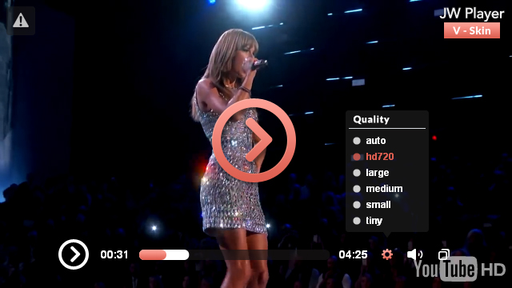

This skin can be build on JW Player 6 or added to your player embeds. After upload it to your webserver, simply set the skin configuration option to the path where you uploaded the XML file.
Here is an example embed code of Flat Skin for JW Player 6 using the JW Embedder. This is a specifically if you are looking for: Seamless failover between the Flash and HTML5 modes and Automatic integration with the JavaScript API.
Add library to <head><script type="text/javascript" src="./jwplayer/jwplayer.js" ></script> <script type="text/javascript">jwplayer.key="YOUR_JW_PLAYER_KEY";</script>
<p id="myVideo">The player will be placed here</p>
<script type="text/javascript">
jwplayer("myVideo").setup({
file: "/uploads/example.mp4",
height: 360,
image: "/uploads/example.jpg",
skin: "/uploads/vpink.xml",
width: 640
});
</script>
If you have any questions that are not answered in this userguide, or any bugs to report, please contact me via email through my CodeCanyon profile. Contacting through CodeCanyon will prove that you purchased the file.